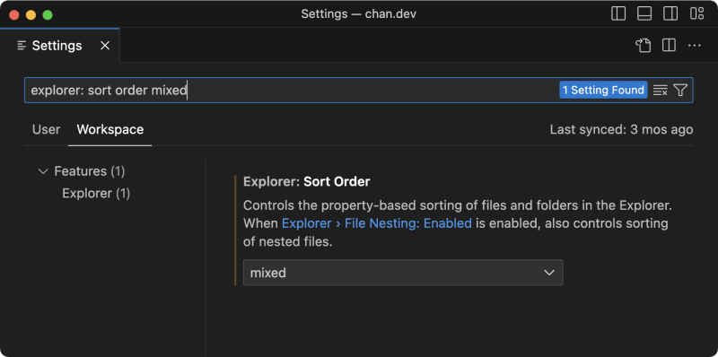

chantastic
Posted on 25 jul • Originally published at chan.dev
 4
4
 4
4
Fix VS Code Explorer for Content Projects
- #vscode
- #coding
- #productivity
- #webdev
- #vscode
- #coding
- #productivity
- #webdev
The VS Code explorer displays folders at the top of a directory. This is a common hierarchy that I like in most cases.
But I hate it for content.
For content sites — like chan.dev — I prefer alphabetical order. I want to see my files and folders all mixed up together.How to change the setting
To change the default behavior, open Settings and find the option for Explorer: Sort Order.
With this option enabled, files and folders are interwoven in the explorer.
Why I prefer mixed sort order
On chan.dev, I have lots of markdown files. Some of them have images. And I want to keep those images in a folder nearby. I ain't tryna faff with Cloudinary or hunt down shared /assets/images folder. I want them right next to my post.
This makes it easy to keep my place on the file system.
Take it further with workspaces
As mentioned, I prefer the default sort order for most projects. So, I keep this setting stored in my chan.dev workspace. And only this project is impacted by the setting.
Subscribe